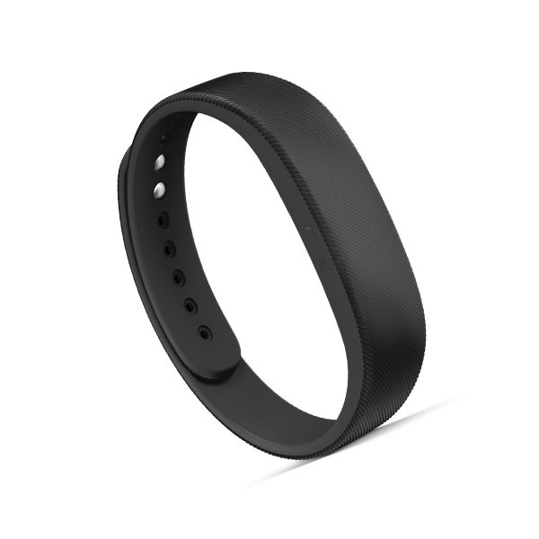

The challenge
- How can attendance and enrolment data prevent dropout in school?
- How can technology play a role in solving this issue?
Our solution
A bracelet that detects when students are at school
Specifications for the bracelet
- Runs on a solar panel; no need for a consistent power supply or
batteries. Possible to use in areas without access to reliable
infrastructure.
- An RFID chip inside the bracelet would contain the students individual
number, as well as data about the child's age, gender and region where
they live.

- The receiver would also run on solar power, similar to solutions like
solar powered parking meters. The children would put the bracelet up
to the receiver to register their attendance.
- Reusable and reprogrammable.
- The data collected will be possible to transmit by satellite to avoid
issues with a lack of stable telecommunications.
How it would work?
The students receive the bracelet on the first day of school. Each day when
they enter school they would register their attendance at a receiver/screen
with the bracelet. If they don’t show up they get registered in the system and
at the end of the month the data is collected and reviewed. When they leave
school they would have to scan the bracelet as well.
Parents or guardians would also be notified by text message if the child is
absent from school(would require tele coverage).
Then we can look through the data and see if there are any patterns with age,
where they live or gender. For example if there is a war going on in one area,
the students from that area might not come to school. This way we can
narrow down the problem and try to fix it.
About us
We are a group of 3 students who previously worked in a bigger group on this particular challenge.
We made this webpage because we thought it would be easier explaining our groups solution here, as well as making the information more accessible for the public.
We believe our solution can be made into reality one day, and our belief in our project is hopefully what is going to accomplish just that.
The group consists of:
Kasper Skog Rustad, Jenny Lian Nergård and Jan Eriksen